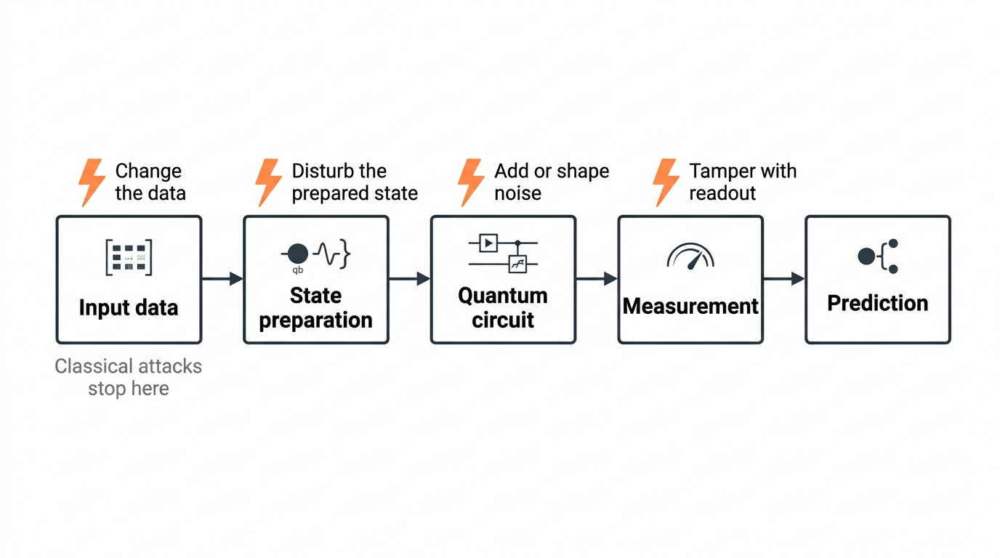
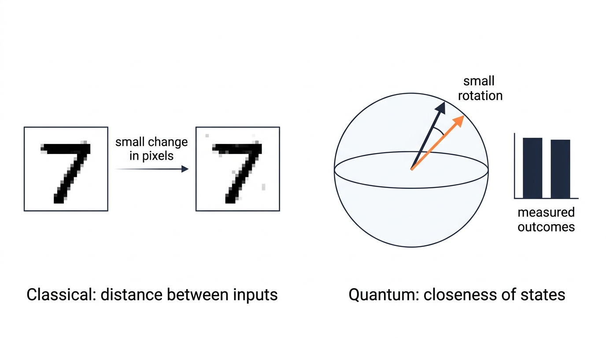

What Does an Adversarial Example Mean in Quantum State Space?

In one sentence
In classical ML an attack means "change the input a little"; in a quantum model the attacker could also disturb the quantum state, the noise or the measurement — so before we can say a quantum model is robust, we have to agree on what the attacker is allowed to do.
What is the problem?
In ordinary machine learning, an adversarial example has a clean definition. Take a photo of a panda, add a tiny pattern of pixel changes — so small a person cannot see it — and the network now says "gibbon." "Tiny" is measured as a distance between the original and the changed image, and a model is called robust if no change within that distance can flip its answer. This shared definition, the threat model, is what lets researchers compare attacks and defenses fairly.
Now consider a quantum classifier. Its input is not just a list of numbers. The data is loaded into qubits — quantum bits that can hold a superposition, a weighted blend of 0 and 1 — and the result is a quantum state. A circuit transforms that state, and then we measure it, which gives random 0s and 1s whose probabilities depend on the state. Hardware noise disturbs the state at every step.
Suddenly "change the input a little" is ambiguous. Does the attacker change the classical data before it is loaded? The quantum state after it is loaded? Can they add noise to the circuit, or bias the measurement? And what does "a little" mean for a quantum state, which is not a picture we can compare pixel by pixel?
This open problem asks for a principled answer: what threat model should define adversarial robustness for quantum machine learning?
Why does it matter?
A robustness claim is only as meaningful as the threat model behind it:
- two papers can both say "our quantum model is robust" and mean completely different things, making results impossible to compare,
- a model that resists data changes may still be easy to fool by an attacker who can touch the quantum state directly — for example in a quantum sensor or a network that passes quantum states between machines,
- without clear rules, defenses tend to be tested against the easiest attacker, and the real risk is underestimated,
- and if quantum models ever process data that is already quantum (from sensors or quantum communication links), there is no classical input to perturb at all — the classical definition simply stops applying.
Where can an attacker act?
The easiest way to see the problem is to lay the quantum pipeline out and ask, at each stage, "could someone interfere here?"

| Attack point | What the attacker does | What "small" might mean |
|---|---|---|
| Data | Changes the classical numbers before they are encoded | The usual distance between inputs — but the encoding may stretch or shrink it |
| State | Slightly rotates or disturbs the quantum state after it is prepared | How hard it would be to tell the two states apart by any measurement |
| Noise | Adds, or deliberately shapes, the noise inside the circuit | How far the noisy process is from the ideal one |
| Measurement | Biases or corrupts the readout of 0s and 1s | How much the output probabilities shift |
The key idea: "small" means hard to tell apart
For images, "small" means few pixels changed by little. For quantum states, the natural notion of "small" comes from physics: two states are close if no measurement can reliably tell them apart. Physicists have precise ways of scoring this — often called fidelity or trace distance — but the intuition is simple: if even an ideal observer would struggle to see the difference, the change is small.

This creates an interesting tension. A small change in the data can become a large change in the state, or the other way round, depending on how the data is encoded. So a model can look robust under one definition and fragile under another — and both statements are true. A good threat model has to say clearly which yardstick it uses and why that yardstick matches a realistic attacker.
Why is it hard?
- Who controls what is unclear. In most near-term uses, an attacker can only touch the classical data. Allowing them to touch the quantum state is a much stronger assumption — realistic for some settings (quantum networks, sensors), unrealistic for others.
- Measurement is random. The model's output is itself an average of random outcomes, so an attack may only succeed sometimes. Is a 30% success rate a broken model?
- Noise is both enemy and shield. Natural hardware noise and adversarial noise are hard to separate, and some noise can even make a classifier more robust.
- High dimensions favor the attacker. Theory suggests that as the number of qubits grows, almost every state sits close to a decision boundary, so tiny state changes can flip the answer.
- Gradients are costly. On real hardware, the information needed to compute the strongest attacks is expensive to estimate, so weak attacks can make a model look safer than it is.
What has been tried so far
- Borrowing the classical definition: attacking the classical input before encoding. Practical and easy to compare with classical models, but it ignores the quantum stages.
- State-level perturbations: theoretical work that measures attacks by closeness of quantum states, and shows that large quantum classifiers can be surprisingly vulnerable.
- Noise-based guarantees: results showing that certain kinds of noise give a provable robustness radius, similar to randomized smoothing in classical ML.
- Verification: methods that check whether any state within a given distance could change a quantum classifier's output.
- Quantum adversarial training: training on attacked states or inputs, carried over from classical adversarial training.
Each line of work quietly picks its own threat model. What is missing is a shared map that lays these choices side by side, says which attacker each corresponds to in the real world, and lets results be compared.
How I would approach it
- Write down a small set of named threat models — data-level, state-level, noise-level, measurement-level — each with what the attacker knows, what they control, and the yardstick for "small."
- For each one, describe a realistic scenario where it applies, and mark the ones that are mainly theoretical today.
- Take a few simple quantum classifiers and evaluate them under every threat model, to show concretely how the same model can look robust under one and fragile under another.
- Study how the encoding translates between data-level and state-level distances, since that translation decides when the classical definition is "good enough."
- Propose a reporting checklist, so that future robustness claims always state which threat model they assume.
Questions still open
- Which threat models correspond to attackers that could exist in the next decade, and which are purely theoretical?
- When the model's output is random, how should an attack's success — and a model's robustness — be scored?
- Can we separate natural hardware noise from adversarial noise, or must robustness cover both?
- How should we define attacks on quantum data that never had a classical form?
- Is there a threat model under which quantum models are genuinely more robust than classical ones? (see OP-07)
- Do attacks on quantum and classical models exploit the same weak spots, or different ones? (see OP-09)
This question sits between OP-07, which asks whether quantum robustness is real, and OP-09, which asks whether the two kinds of model fail differently. It also echoes OP-03, which asks whether robustness can generalize to attacks a model was never trained against, and the security of quantum communication itself in OP-16.
Work on this together
If you work on quantum information, adversarial machine learning or security threat modeling — or you think the whole classical notion of an "adversarial example" should be thrown out for quantum models — I would love to hear from you.
Reach out about OP-08Further reading
- Szegedy et al. — Intriguing Properties of Neural Networks (ICLR 2014)
- Goodfellow, Shlens & Szegedy — Explaining and Harnessing Adversarial Examples (ICLR 2015)
- Madry et al. — Towards Deep Learning Models Resistant to Adversarial Attacks (ICLR 2018)
- Liu & Wittek — Vulnerability of Quantum Classification to Adversarial Perturbations (Physical Review A 2020)
- Lu, Duan & Deng — Quantum Adversarial Machine Learning (Physical Review Research 2020)
- Du et al. — Quantum Noise Protects Quantum Classifiers Against Adversaries (Physical Review Research 2021)
- Guan, Fang & Ying — Robustness Verification of Quantum Classifiers (CAV 2021)
- Nielsen & Chuang — Quantum Computation and Quantum Information (Cambridge University Press, 2000)